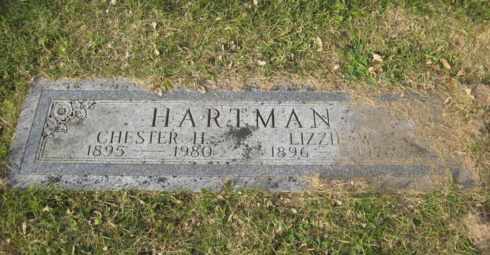

Chester Heckman HARTMAN
born 01 Oct 1895 at Boyertown, PA
died Nov 1980
Lizzie Weiss HAUSMAN
born 22 June 1896 at Colebrookdale, PA
died 13 March 1976 at 120 N. Reading St., Boyertown, PA
(parents of Titus Hartman)
Edith HARTMAN
born 1917
died 16 Apr 1970
Jeanette HARTMAN
born 23 Oct 1919 at Boyertown, PA
died 01 Oct 2014 at Yardley, PA
Lillian HARTMAN
born 01 Mar 1922 at Boyertown, PA
died 14 Apr 2006
Lewis HARTMAN
born 22 Jun 1926 at Boyertown, PA
died 06 Oct 2002 at Bally, PA
Titus HARTMAN
26 Oct 1930
died 11 Dec 2013 at Pine Grove, PA
David HARTMAN
born 05 Jul 1936
died 07 Jul 2019
Chester and Lizzie are buried together at Fairview Cemetery, Boyertown, PA.
